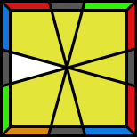

Dit is een lijst voor een set algoritmes voor de Square-1 puzzel, een evenement in de WCA waar ik mij in specialiseer.
| Case | Alg |
|---|---|
| (0,-1) / (4,-2) / (-3,0) / (0,3) / (0,-3) / (-1,2) / | |
| (4,-3) / (-3,0) / (-1,2) / (1,1) / (0,-3) / (3,0) / | |
| (1,0) / (2,-1) / (0,-3) / (3,0 / (-3,0) / (-2,4) / |
| Case | Alg |
|---|---|
|  | (1,0) / (-3,0) / (-1,2) / (1,1) / (0,-3) / (3,0) / |
| (1,0 / (0,3) / (2,-1) / (1,1) / (-3,0) / (0,-3) / | |
| (1,0) / (-4,-3) / (-3,0) / (-3,-3) / (-3,0) / (-2,-3) / |